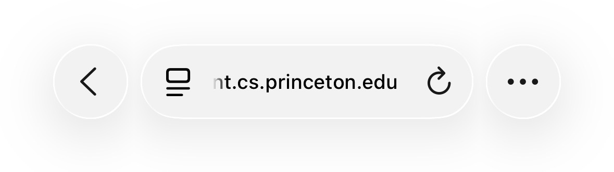
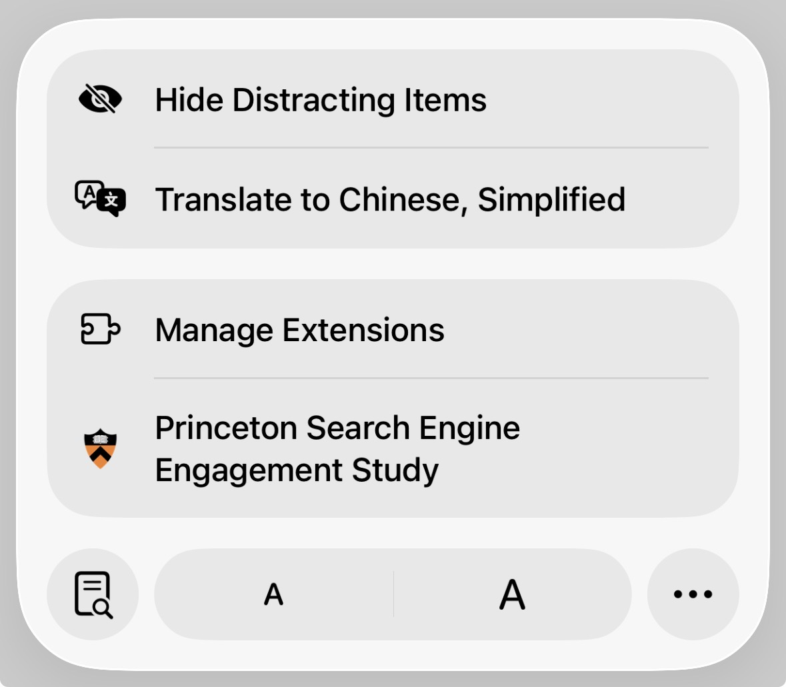
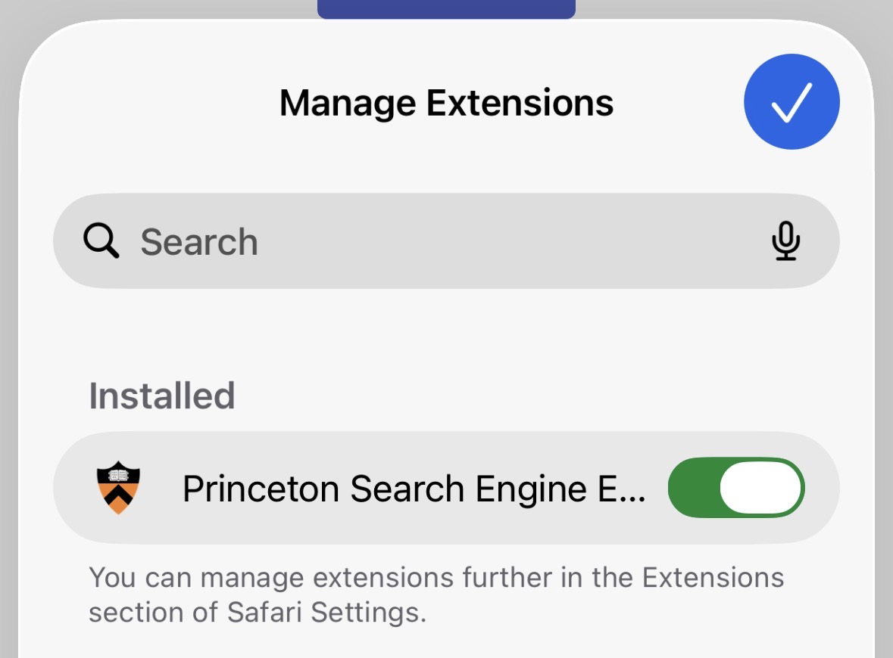

One last check before you continue.
Before we hand you off to the feedback page, please confirm that the Princeton Search Engine Engagement Study extension is toggled on and set to Always Allow on All Websites. You can verify this directly from the extensions icon at the bottom of your Safari browser. This is required for the study to work correctly.
-
In Safari, look at the address bar at the bottom of the browser
and tap the extensions icon (the small page-stack icon to
the left of the URL).

-
In the menu that appears, tap Manage Extensions. You should
also see Princeton Search Engine Engagement Study listed
here.

-
On the Manage Extensions panel, confirm that
Princeton Search Engine Engagement Study is listed under
Installed and that its toggle is green / on. If it
is off, tap the toggle to turn it on, then tap the checkmark to
confirm.

Once you have verified this, click Continue below to proceed to the feedback page.